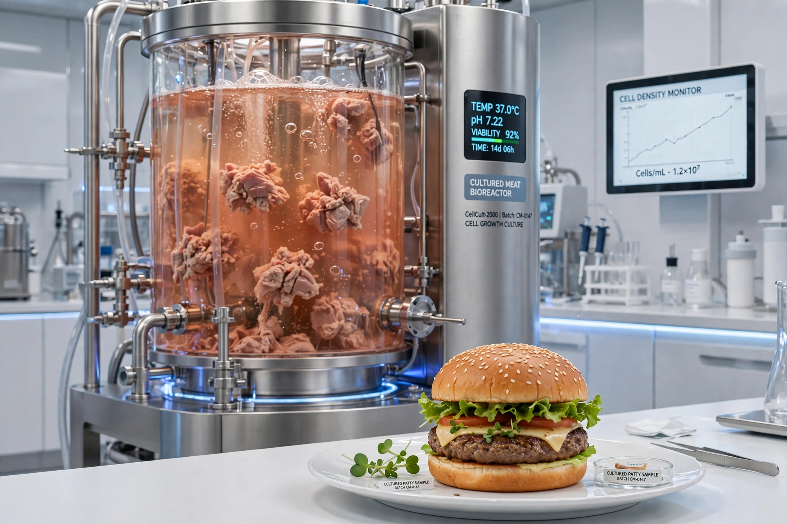

| Cultured meat | |
|---|---|
 | |
| Other names | Cultivated meat, cell-based meat, lab-grown meat, clean meat |
| First public tasting | 5 August 2013, London (Mark Post's cultured beef burger) |
| First regulatory approval | Singapore, December 2020 (Eat Just cultured chicken) |
Cultured meat, also called cultivated meat or cell-based meat, is meat produced by cultivating animal cells in a bioreactor rather than by raising and slaughtering animals. It is a form of cellular agriculture. Muscle and fat cells are obtained from a living animal by biopsy (or from established cell lines), then proliferated in a nutrient-rich growth medium and assembled — often on edible scaffolds — into products such as nuggets, burgers or fillets. Advocates argue it could greatly reduce the land use, greenhouse-gas emissions, water use and animal suffering associated with conventional meat; critics question its cost, energy demands and scalability.
The idea is old — Winston Churchill speculated in 1931 that future generations would "escape the absurdity of growing a whole chicken in order to eat the breast or wing" — but practical work began with tissue-engineering research in the 1990s and 2000s, including NASA-funded experiments on growing fish muscle for spaceflight. Dutch scientist Mark Post presented the first cultured beef burger at a press event in London on 5 August 2013; the burger, funded by Google co-founder Sergey Brin at a cost of about €250,000, was tasted by food critics who judged it close to, but leaner than, conventional beef. The demonstration triggered a wave of start-ups — including Mosa Meat (co-founded by Post), Upside Foods (formerly Memphis Meats), Eat Just, Aleph Farms and Believer Meats — and billions of dollars of investment.
Production typically involves selecting starter cells (myosatellite cells, embryonic stem cells or induced pluripotent stem cells), expanding them in stirred-tank bioreactors in a medium supplying amino acids, sugars, vitamins and growth factors, then differentiating them into muscle fibres and fat and structuring the result. Historically the medium relied on fetal bovine serum, an animal product the industry has worked to replace with serum-free, food-grade formulations for cost, ethical and supply reasons. Creating structured cuts like steak, with marbled fat and connective tissue, is harder than making ground products and is an active area of research involving scaffolding and 3D bioprinting.
Singapore became the first country to approve the sale of a cultured meat product (Eat Just's cultured chicken) in December 2020. In 2023 the United States completed pre-market consultations and USDA inspections allowing Upside Foods and Eat Just's GOOD Meat to sell cultured chicken. Israel approved Aleph Farms' cultured beef in 2024. Conversely, Italy banned the production and sale of cultured meat in 2023, and several US states (including Florida and Alabama in 2024) enacted bans. The industry contracted sharply in the mid-2020s as high costs and funding difficulties forced closures and layoffs, and commercial volumes remain tiny and mostly limited to showcase restaurants.